품질경영기사 (2015-05-31 기출문제)
1과목: 실험계획법
1. 다음은 변량인자 A와 B로 이루어진 지분실험법의 분산분석표이다. 여기서 σ2B(A)의 추정값은?
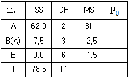
- 0.5
- 1.0
- 1.5
- 2.5
(정답률: 70%)

2. 분할법에서 2차 인자와 3차 인자의 교호작용은 몇 차 단위의 요인이 되는가?
- 1차 단위
- 2차 단위
- 3차 단위
- 4차 단위
(정답률: 79%)
3. 다음과 같은 일원배치법에서 오차항의 자유도는?
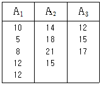
- 9
- 10
- 11
- 12
(정답률: 75%)
4. 형 실험계획에서 반복이 없는 실험을 하여 아래 표와 같은 데이터를 얻었다. 인자 A의 주효과는?
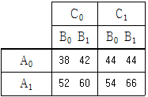
- 8
- 16
- 18
- 30
(정답률: 76%)
5. 4X4 라틴 방격법에서 오차의 자유도는?
- 4
- 6
- 8
- 10
(정답률: 74%)
6. 화학공정에서 수율을 향상시킬 목적으로 온도를 3수준, 실험일을 3일 선택하여 실험을 실시하려고 한다. 인자의 종류에 따라 분류할 때 실험계획에서 사용되는 모형은?
- 모수모형
- 변량모형
- 혼합모형
- 블록모형
(정답률: 65%)
7. 25형의 1/4실시 실험에서 이중교락을 시켜 블록과 ABCDE, ABC, DE를 교락시켰다. AD 와 별명관계 중 틀린 것은?
- AB
- AE
- BCE
- BCD
(정답률: 80%)
8. 다음은 모수인자 반복없는 삼원배치 분산분석 결과를 풀링하여 다시 정리한 것이다. 다음 설명 중 틀린 것은?
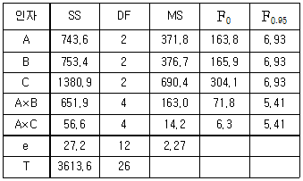
- 풀링 전 오차의 자유도는 8 이었다.
- 교호작용 BxC 는 오차항에 풀링되었다.
- 최적해의 추정치는
 이다.
이다. - 현재의 자유도로 보아 결측치가 하나 있는 것으로 나타났다.
(정답률: 71%)
9. 모수모형 이원배치법의 분산분석을 실시한 결과 교호작용이 무시되었다. 오차항에 풀링한 후 요인 B의 분산비를 구하면 약 얼마인가?
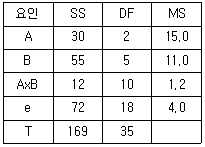
- 2.75
- 3.67
- 5.50
- 9.17
(정답률: 75%)
10. 일원배치법에서 인자 A를 3수준으로 반복 5회 측정의 실험을 하였을 경우 SA의 기댓값은?
- E(SA) = 2σ2e + 10σ2A
- E(SA) = σ2e + 3σ2A
- E(SA) = 2σ2e + 6σ2A
- E(SA) = σ2e + 5σ2A
(정답률: 43%)
11. 인자의 수준과 수준수를 택하는 방법으로 가장 거리가 먼 것은?
- 현재 사용되고 있는 인자의 수준은 포함시키는 것이 바람직하다.
- 실험자가 생각하고 있는 각 인자의 흥미영역에서만 수준을 잡아준다.
- 특성치가 명확히 나쁘게 되리라고 예상되는 인자의 수준은 흥미영역에 포함된다.
- 수준수는 보통 2~5수준이 적절하며 많아도 6수준이 넘지 않도록 하여야 한다.
(정답률: 71%)
12. 선형식(L)이 다음과 같을 때 이 선형식의 단위수는?
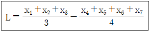
- 1/4
- 3/4
- 5/12
- 7/12
(정답률: 78%)
13. 2 수준계에서 주효과 A, B, C, D 교호작용 A×B, A×C를 배치하고자 할 때 실험 횟수를 가장 경제적으로 할 수 있는 직교배열표는?
- L4(23)
- L8(27)
- L16(215)
- L9(34)
(정답률: 79%)
14. 다구찌 방법에서 사용되는 제품설계 또는 공정설계의 3단계로 틀린 것은?
- 파라미터 설계
- 시스템 설계
- 프로세스 설계
- 허용차 설계
(정답률: 53%)
15. 적합품 여부의 동일성에 관한 실험에서 적함품이면 0, 부적합품이면 1의 값을 주기로 하고, 4대의 기계에서 나오는 200 개씩의 제품을 만들어 부적합품 여부를 조사하였다. 기계간의 변동 SA를 구하면?
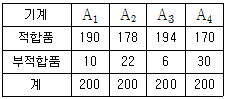
- 0.15
- 1.82
- 5.78
- 62.22
(정답률: 73%)
16. 4요인(factor) A, B, C, D에 관한 24요인실험의 일부 실시(fractional replication)에서 정의대비 (defining contrast)를 M=ABCD로 하였을 때 별명관계(alias relation)로 옳은 것은?
- A=BCD
- B=ABD
- C=ACD
- D=ABD
(정답률: 83%)
17. 선형 회귀분석에서 사용되는 변동에 관한 공식들 중 틀린 것은?(단, S(yy) : 총 변동, S(yㆍx) : 회귀에 의하여 설명이 안되는 변동, SR : 회귀에 의하여 설명되는 변동)
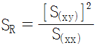
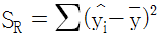
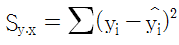
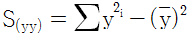
(정답률: 47%)
18. 반복이 있는 이원 배치법(인자 A는 모수, 인자 B가 변량)에서 제곱평균의 기대치(E(VA))들에 대한 표현으로 틀린 것은?(단, A는 l 수준, B는 m 수준, 반복 r 회 이다.)
- E(VE) = σ2e
- E(VB) = σ2e + lrσ2B
- E(VA) = σ2e + mrσ2A
- E(VA×B) = σ2e + rσ2A×B
(정답률: 74%)
19. L27(313)인 직교배열표에서 배치한 인자의 수가 8이고, 교호작용을 배치하지 않았다면 오차항에 대한 자유도는?
- 5
- 8
- 10
- 12
(정답률: 65%)
20. A인자가 모수이고 B인자가 변량인 난괴법 실험에서 μ(Ai)의 점추정치는
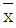
이다. 이 의 분산의 추정치로 가장 올바른 것은?(단, A 인자의 수준수는 l = 4, B인자의 수준수는 m = 3)
의 분산의 추정치로 가장 올바른 것은?(단, A 인자의 수준수는 l = 4, B인자의 수준수는 m = 3)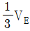
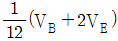
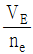
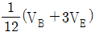
(정답률: 54%)
2과목: 통계적품질관리
21. 샘플링검사에서 n=40, c=0인 검사방식을 적용할 때 P0 = 2% 인 로트가 합격할 확률은? (단, L(p)는 이항분포로 근사시켜 구하시오.)
- 42.57%
- 44.57%
- 46.57%
- 48.57%
(정답률: 73%)
22. 산점도를 그린 후에 검토하여야 할 사항 중 틀린 것은?
- 이상한 데이터가 없나를 확인한다.
- 두 변수 사이에 어떤 관계가 있는지를 검토한다.
- 두 변수가 곡선관계인 경우도 상관계수를 구하여 검토한다.
- 점들이 뚜렷하게 두 개 또는 그 이상으로 층별되는 경우가 있는가를 검토한다.
(정답률: 72%)
23. 관리도에 대한 설명으로 틀린 것은?
- Shewhart 관리도는 보통 3σ 관리한계선을 사용한다.
- 제조공정에서의 품질변동은 이상원인에 의해서만 발생한다.
- 관리도는 사용하는 통계량에 따라 계수형과 계량형으로 분류한다.
- 공정의 관리상태에 대한 판정은 공정에 대한 가설검정 문제와 유사하다.
(정답률: 79%)
24. 누적합(Cusum) 관리도의 장점으로 틀린 것은?
- 공정변화를 민감하게 반영한다.
- 현장에서 작성하기가 용이하다.
- 과거의 모든 데이터를 사용한다.
- 공정변화가 일어난 시간을 보여준다.
(정답률: 70%)
25. 샘플링검사보다 전수검사를 실시하는 경우는?(오류 신고가 접수된 문제입니다. 반드시 정답과 해설을 확인하시기 바랍니다.)
- 검사항목이 많은 경우
- 파괴검사를 해야 하는 경우
- 품질특성치가 부적합수를 포함하지 않는 경우
- 생산자에게 품질향상의 자극을 주고 싶을 경우
(정답률: 65%)
26. X, Y는 확률변수이다. X와 Y의 공분산이 8, X의 기대치가 2이고, Y의 기대치가 3일 때 XY의 기대치는?
- 2
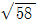
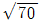
- 14
(정답률: 65%)
27. 계량치 축차 샘플링 검사방식(KS Q ISO 8423 : 2009)에서 주어진 값 및 파라메터는 하한 규격 200 KV, 로트 표준편차는 1.2 KV, hA = 4.312, hR = 5.536, g= 2.315, nt = 49이다. n = 12번째까지 누계여유치(Y)가 38.8 이라면 n = 12에서 하측 불합격 판정치 R의 값은?
- 23.125
- 26.693
- 29.471
- 31.147
(정답률: 60%)
28. 계수 및 계량 규준형 1회 샘플링 검사(KS Q 0001 : 2013)에서 로트의 평균치를 보증하는 경우에 상한합격판정값(
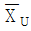
)이 5.6, G0σ = 2.6 이라면, 가능한 한 합격시키고자 하는 로트의 평균값의 한계(m0)는 약 얼마인가?- 3.0
- 4.3
- 5.6
- 8.2
(정답률: 67%)
29. 적합도 검정에 관한 설명으로 틀린 것은?
- 기대도수는 계산된 수치이다.
- 적합도 검정은 주로 카이제곱 분포를 따른다.
- 적합도 검정은 확률의 가정된 값이 정해지지 않는 경우 사용할 수 없다.
- 주어진 데이터가 정규분포인지 알아내는데 사용할 수 있다.
(정답률: 22%)
30. A 구장에서 경기를 하게 되면 타 구장과 비교해 홈런을 칠 확률이 높다고 한다. 실제 타구장과 비교해 홈런을 칠 확률이 50% 보다 큰지를 확인하기 위해 A 구장에서 시합한 선수 30명을 조사해 보았더니 홈런을 친 선수가 18명 이었다. A 구장에서 시합을 하면 홈런을 칠 확률이 50%보다 높은지를 검정할 때 검정통계량의 값은?
- 0.002
- 1.095
- 1.960
- 2.315
(정답률: 60%)
31. 모분산(σ2)을 추정함에 있어서 자유도가 커짐에 따라 신뢰구간의 폭은 일반적으로 어떻게 변하는가?
- 일정하다
- 점점 커진다
- 점점 작아진다
- 영향을 받지 않는다.
(정답률: 70%)
32. 군의 크기 n = 4의  -R 관리도에서
-R 관리도에서
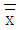
= 18.50,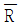
= 3.09 인 관리상태이다. 지금 공정평균이 15.50 으로 되었다면 본래의 3σ 한계로부터 벗어날 확률은? (단, n = 4일 때 d2 = 2.⑤9 이다.)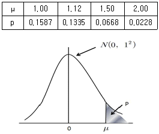
- 0.1587
- 0.1335
- 0.6680
- 0.8413
(정답률: 39%)
33. 이항분포의 성질로 틀린 것은?
- p=0.5일 때 평균에 대해 대칭이다.
- 평균과 분산은 각각 μ = np, σ2 = np(1-p) 이다.
- p ≥ 0.1 이고, n ≤ 20 이면 포아송분포로 근사시킬 수 있다.
- p ≤ 0.5 이고, np ≥ 5 이면서 n(1-p) ≥ 5 이면 정규분포로 근사시킬 수 있다.
(정답률: 77%)
34. c 관리도와 u 관리도에 관한 설명으로 틀린 것은?
- 표본의 크기가 일정하지 않을 때 c 관리도를 사용한다.
- 표본의 크기가 일정 할 때 c 관리도의 중심선은 변하지 않는다.
- 표본의 크기가 일정하지 않을 때 u 관리도의 중심선은 변하지 않는다.
- 표본의 크기가 일정하지 않을 때 u 관리도의 관리한계는 n에 따라 변한다.
(정답률: 60%)
35. 시험기간이 길고 전 항목을 동시에 시험할 때 검사하는 방식으로 적합한 것은?
- 1회 샘플링 검사
- 다회 샘플링 검사
- 2회 샘플링 검사
- 축차 샘플링 검사
(정답률: 59%)
36. 정규분포를 따르는 모집단에서 10개의 제품을 뽑아서 두께를 측정한 결과 [데이터]와 같은 자료를 얻었다. 제품 두께의 모분산(σ2)에 대한 90% 신뢰구간은 약 얼마인가?(단, x20.⑤(9) = 3.33, x20.95(9) = 16.92, t0.95(9) = 1.833, t0.975(9) = 2.262 이다.)
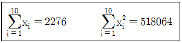
- 2.74 ≤ σ2 ≤ 13.93
- 3.04 ≤ σ2 ≤ 13.93
- 2.74 ≤ σ2 ≤ 15.48
- 3.04 ≤ σ2 ≤ 15.48
(정답률: 67%)
37. 로트별 합격품질한계(AQL) 지표형 샘플링검사(KS A ISO 2859-1)에서 샘플링표 구성의 특징으로 틀린 것은?
- 로트의 크기에 따라 생산자 위험이 일정하게 되어 있다.
- AQL 과 시료의 크기에는 등비수열이 채택되어 있다.
- 구매자에게는 원하지 않는 품질의 로트를 합격시키지 않도록 설계되어 있으며 장기적인 품질보증을 할 수 있도록 설계되어 있다.
- 까다로운 검사의 경우 보통 검사와 검사개수는 같고 AC를 조정하게 되어 있으나, AC=0 인 경우에는 시료수가 증가하게 되어 있는 샘플링 검사방식이다.
(정답률: 52%)
38. μ = 23.30 인 모집단에서 n = 6 개를 추출하여 어떤 값을 측정한 결과는 다음과 같다. 모평균의 검정을 위하여 검정통계량(t0)을 구하면 약 얼마인가?
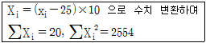
- 1.23
- 1.32
- 2.23
- 4.98
(정답률: 32%)
39. 공정해석을 위한 특성치의 선정 시 고려해야 할 주의사항으로 틀린 것은?
- 수량화하기 쉬운 것을 택한다.
- 해석을 위한 특성은 되도록 많이 택한다.
- 기술상으로 보아 공정이나 제품에 있어서 중요한 것을 택한다.
- 해석을 위한 특성과 관리를 위한 특성은 반드시 일치 시킨다.
(정답률: 57%)
40. 모분산이 설정된 기준치보다 크다고 할 수 있는가의 검정에서 기각역의 크기를 추정하려면 다음 중 어떠한 전제조건을 만족해야 하는가?
- x02＜xα/22(v)
- x02＞x1-α/22(v)
- x02＜xα2(v)
- x02＞x1-α2(v)
(정답률: 49%)
3과목: 생산시스템
41. ABC 재고관리기법의 특징이 아닌 것은?
- 품목의 중요도에 따라 관리방식이 달라진다.
- 중요한 소수 품목을 중점관리 하는 방식이다.
- 파레토분석 등을 통해 품목의 중요도를 결정한다.
- 모든 품목의 비용을 최소화하는 발주량을 수리적으로 결정한다.
(정답률: 65%)
42. 다음 도표에서 비용구배 (Cost Slope)는?
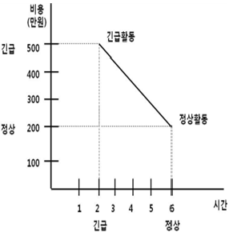
- 75만원
- 80만원
- 85만원
- 90만원
(정답률: 78%)
43. 지수평활상수(α)에 대한 설명으로 가장 올바른 내용은?
- 초기에 설정한 α 값은 변경할 수 없다.
- α 값은 –1 이상, 1 이하인 실수 값으로 결정한다.
- 수요의 추세가 안정적인 경우에는 α 값을 크게 한다.
- α 가 큰 경우는 최근의 실제수요에 보다 큰 비중을 둔다.
(정답률: 55%)
44. MRP 시스템의 특징이 아닌 것은?
- 주문의 발주계획 생성
- 제품구조를 반영한 계획 수립
- 생산통제와 재고관리 기능의 분리
- 주문에 대한 독촉과 지연정보 제공
(정답률: 58%)
45. 자재의 분류 중 전통적인 방법과 SCM에 의한 방법을 비교한 내용 중 틀린 것은?
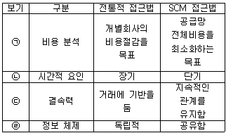
- ㉠
- ㉡
- ㉢
- ㉣
(정답률: 72%)
46. 다품종소량생산 환경에서 수요나 공정의 변화에 대응하기 쉽도록 주로 범용설비를 이용하여 구성하는 배치형태는?
- 제품별배치
- Line 배치
- 공정별배치
- 고정위치배치
(정답률: 73%)
47. 설비배치의 목적이 아닌 것은?
- 설비 및 인력의 증대
- 운반 및 물자취급의 최소화
- 안전확보와 작업자의 직무만족
- 공정의 균형화와 생산흐름에 원활화
(정답률: 73%)
48. 각 제품의 매출액과 한계 이익률이 [표]와 같다. 평균 한계이익률을 사용한 손익분기점은? (단, 고정비는 1300만원이다.)
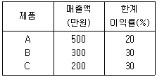
- 4600 만원
- 4800 만원
- 5000 만원
- 5200 만원
(정답률: 64%)
49. 품종별 한계이익액을 산출하고 이를 고정비와 대비하여 손익분기점을 구하는 방식은?
- 평균법
- 기준법
- 개별법
- 절충법
(정답률: 69%)
50. 작업시스템 분석의 구분 대상을 큰 것부터 작은 것 순서로 나열된 것은?
- 공정 – 단위작업 – 요소작업 – 동 작
- 공정 – 요소작업 – 단위작업 – 동 작
- 공정 – 동작 – 요소작업 – 단위작 업
- 공정 – 단위작업 – 동작 – 요소작 업
(정답률: 70%)
51. 제품 A의 공정별 소요시간을 이용하여 총 6명의 작업자로 구성된 생산라인을 편성하고자 한다. 균형효율이 최대가 되는 편성안을 채택했을 때 이 라인의 1일 최대 생산량은? (단, 1일 실제 가동시간은 480분, 각 공정에는 최소 1명의 작업자를 배치한다.)
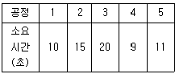
- 1100개
- 1152개
- 1440개
- 1920개
(정답률: 34%)
52. 적시생산시스템(JIT)에서 자동화에 관한 설명으로 틀린 것은?
- 품질통제와는 거리가 멀다.
- '自動化(autonomation)'로 표기한다.
- 자율적 품질관리를 전제로 한다.
- 작업자 또는 기계가 공정을 체크하여 이상여부를 판단한다.
(정답률: 60%)
53. 설비종합효율의 구성요소인 시간가동율을 산출하는 데 필요한 항목이 아닌 것은?
- 부하시간
- 고장정지 로스시간
- 실제사이클타임
- 준비교체 로스시간
(정답률: 58%)
54. 자동차 부품을 생산 목표량은 1,800개 이다. 이 공장은 하루 8시간 작업에 오전·오후 각 30분씩의 휴식시간을 주고 점심시간은 50분이다. 또한 라인 여유율이 7%이고, 생산된 제품의 부적합품률이 2%이다. 이 공장의 피치타임은?
- 7.24초
- 11.24초
- 9.24초
- 13.24초
(정답률: 56%)
55. 시스템(System)의 개념과 관련되는 주요 내용들은 시스템의 특성 내지 속성으로 나타내는데 시스템의 기본 속성이 아닌 것은?
- 환경적응성
- 기능성
- 목적추구성
- 관련성
(정답률: 62%)
56. 예방보전을 효율적으로 수행할 경우의 효과에 해당되지 않는 것은?
- 기계 수리비용 절감
- 재공품재고 회전율 감소
- 생산시스템의 신뢰도 향상
- 정지시간에 의한 유휴손실 감소
(정답률: 72%)
57. 일반적으로 기업들이 아웃소싱을 하는 이유에 대한 설명으로 가장 거리가 먼 것은?
- 자본부족을 보강하기 위한 아웃소싱
- 생산능력의 탄력성을 위한 아웃소싱
- 기술부족을 보강하기 위한 아웃소싱
- 경영정보를 공유하기 위한 아웃소싱
(정답률: 77%)
58. 웨스팅하우스법에 의한 작업수행도 평가에 반영되는 요소가 아닌 것은?
- 작업의 숙련도(Skill)
- 작업의 노력도(Effort)
- 작업의 난이도(Difficulty)
- 작업의 일관성(Consistency)
(정답률: 61%)
59. 일정계획의 주요 기능에 해당되지 않는 것은?
- 작업 할당
- 제품 조합
- 부하 결정
- 작업우선순위 결정
(정답률: 68%)
60. 작업을 저속촬영(매초 1 Frame or 매분 100 Frame)한 후 이를 도표로 그려 분석하는 기법으로 사이클 타임이 긴 작업을 효과적으로 분석하는 기법은?
- Memo Motion Study
- Micro Motion Study
- Cycle Graph 분석
- Eye Camera 분석
(정답률: 58%)
4과목: 신뢰성관리
61. 일반적으로 가정용 오디오, TV, 에어컨 등의 시스템, 기기 및 부품 등이 정해진 사용조건에서 의도하는 기간 동안 정해진 기능을 발휘할 확률은?
- 신뢰도
- 고장률
- 불신뢰도
- 전자부품수명관리도
(정답률: 78%)
62. 다음과 같은 신뢰성 블록도를 갖는 시스템의 신뢰성이 0.999 이상이 되려면 N은 최소 얼마 이상이 되어야 하는가? (단, 모든 부품의 신뢰성은 0.9 이다.)
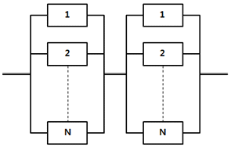
- 2
- 3
- 4
- 5
(정답률: 62%)
63. 부하의 평균(μx)이 1, 표준편차(σx)가 0.4, 재료강도의 표준편차(σy)가 0.4 이고, μx 와 μy 로부터 거리인 nx 와 ny 가 각각 2인 경우 안전계수를 1.52로 하고 싶다면, 재료의 평균강도(μy)는 약 얼마가 되어야 하는가? (단, 재료의 강도와 여기에 걸리는 부하는 정규분포에 따른다.)
- 1.25
- 2.24
- 3.⑤
- 3.54
(정답률: 63%)
64. 신뢰성 샘플링 검사에서 MTBF 와 같은 수명 데이터를 기초로 로트의 합부판정을 결정하는 것은?
- 계수형 샘플링검사
- 계량형 샘플링검사
- 조정형 샘플링검사
- 선별형 샘플링검사
(정답률: 80%)
65. 어떤 기계의 보전도(M(t))가 지수분포를 따르고 1시간 동안의 보전도가 M(1) = 1-e-2×1가 되었다면 평균 수리시간은(MTTR)은?
- 0.5
- 1.0
- 1.5
- 2.0
(정답률: 60%)
66. 시스템의 FT(Fault Tree)도가 그림과 같을 때 이 시스템의 블록도로 옳은 것은?
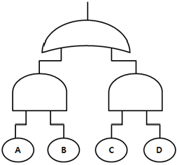
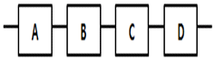
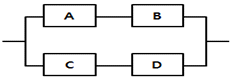
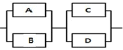
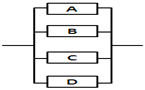
(정답률: 65%)
67. 고장률 함수 λ(t)의 표현으로 옳은 것은?(단, F(t)는 고장분포함수, f(t)는 고장밀도 함수이다.)
- λ(t) = 1-F(t)
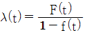
- λ(t) = f(t)(1-F(t))
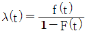
(정답률: 67%)
68. 기계의 고장시간 분포가 평균이 110시간, 표준편차가 20 시간인 정규분포를 따른다. 기계를 149.2 시간 사용하였을 때의 신뢰도는?(단, Z0.025 = 1.96, Z0.⑤ = 1.645, Z0.1 = 1.285 이다.)
- 0.025
- 0.⑤0
- 0.950
- 0.975
(정답률: 49%)
69. 제품의 신뢰성은 고유 신뢰성과 사용 신뢰성으로 구분된다. 다음 중 사용 신뢰성의 증대방법에 속하는 것은?
- 기기나 시스템에 대한 사용자 매뉴얼을 작성 배포한다.
- 부품의 전기적, 기계적, 열적 및 기타 작동조건을 경감한다.
- 부품고장의 영향을 감소시키는 구조적 설계방안을 강구한다.
- 병렬 및 대기 리던던시(redundancy) 설계방법에서 활용한다.
(정답률: 65%)
70. 각각의 신뢰도가 0.7인 부품을 사용하여 시스템의 신뢰도를 95% 이상으로 하기 위해서는 최소한 몇 개의 구성요소를 병렬로 연결해야 하는가?
- 2개
- 3개
- 4개
- 6개
(정답률: 70%)
71. 무기억 특성(memoryless property) 과 밀접한 관계가 있는 수명분포는?
- 감마분포
- 정규분포
- 지수분포
- 와이블분포
(정답률: 64%)
72. 수명분포가 지수분포인 샘플 10개에 대하여 4개가 고장날 때까지 시험한 결과 얻어진 MTBF 의 점추정치는 2000시간이다. 신뢰수준 90%로 MTBF의 신뢰구간을 추정하면 약 얼마인가?(단, 정수중단 시 신뢰수준 90%, r=4일 때의 신뢰구간 하한과 상한 의 추정 계수 값은 각각 0.52 와 2.93 이다.)
- 1040 ~ 2000 시간
- 1800 ~ 2000 시간
- 1040 ~ 5860 시간
- 2000 ~ 5860 시간
(정답률: 55%)
73. 고장률이 일정하며 0.0⑤/시간으로서 동일한 부품 10개가 동시에 모두 작동해야만 기능을 발휘하는 시스템의 평균수명은 몇 시간인가?
- 2
- 20
- 200
- 2000
(정답률: 63%)
74. 신뢰도를 배분할 때 고려해야 하는 사항으로 틀린 것은?
- 신뢰도가 높은 구성품에는 높게 부여한다.
- 중요한 구성품에는 신뢰도를 높게 배정한다.
- 표준 구성품을 사용하여 호환성을 갖게 한다.
- 안전성, 경제성을 고려하여 시스템 전체로 보아 균형을 취한다.
(정답률: 55%)
75. 욕조형 고장률함수에서 우발고장기간에 대한 설명으로 가장 올바른 것은?
- 설비의 노후화로 인하여 발생한다.
- 불량제조와 불량설치 등에 의해 발생한다.
- 고장률이 비교적 크며 시간이 지남에 따라 증가한다.
- 고장률이 비교적 낮으며 시간에 관계없이 일정하다.
(정답률: 79%)
76. 샘플수가 35개 n시간까지의 누적고장개수가 22개일 때, 신뢰도 R(t)는 약 얼마인가?(단, 신뢰도는 평균순위법을 이용하여 구한다.)
- 0.327
- 0.347
- 0.367
- 0.389
(정답률: 67%)
77. 수명시험 중 특히 수명시간을 단축할 목적으로 고장 메커니즘을 촉진하기 위해 가혹한 환경조건에서 행하는 시험은?
- 환경시험
- 정상수명시험
- screening 시험
- 가속수명시험
(정답률: 77%)
78. 300개의 전구로 구성된 전자제품에 대하여 수명시험을 한 결과 4시간과 6시간 사이의 고장개수가 22개이다. 4시간에서 이 전구의 고장확률밀도함수 f(t)는 약 얼마인가?
- 0.0333/시간
- 0.0367/시간
- 0.0433/시간
- 0.0457/시간
(정답률: 68%)
79. 고장률이 λ 인 지수분포를 따르는 N 개의 부품을 T 시간 사용할 때 C건의 고장이 발생하는 확률은 어떤 분포로부터 구할 수 있는가? (단, N 은 굉장히 크다고 한다.)
- 지수분포
- 포아송분포
- 베르누이분포
- 와이블분포
(정답률: 69%)
80. 지수분포의 고장시간과 수리시간을 갖는 어떤 장비를 관찰하여 다음과 같은 [데이터]를 얻었다. 이 장비의 가용도(Availability)는 약 얼마인가?
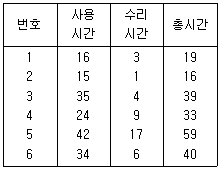
- 0.8
- 0.6
- 0.4
- 0.2
(정답률: 74%)
5과목: 품질경영
81. 허용차와 공차에 대한 설명으로 틀린 것은?
- 허용차는 규정된 기준치와 규정된 한계치와의 차이다.
- 최대허용치와 최소허용치와의 차이를 공차라고 한다.
- 허용한계치에서 그 기준을 뺀 값을 실치수라고 한다.
- 허용차의 표시방법은 양쪽이 같은 수치를 가질 때에는 ±를 붙여서 기재한다.
(정답률: 63%)
82. 신 QC 7가지 기법 중 장래의 문제나 미지의 문제에 대해 수집한 정보를 상호 친화성에 의해 정리하고, 해결해야 할 문제를 명확히 하는 방법은?
- KJ법
- 계통도법
- PDPC법
- 연관도법
(정답률: 66%)
83. 공정의 품질변동에 영향을 주는 요인으로 보통 5M을 뽑는다. 다음 중 5M은?
- Man, Method, Machine, Measurement, Money
- Man, Method, Material, Machine, Measurement
- Man, Method, Material, Measurement, Management
- Man, Machine, Material, Measurement, Management
(정답률: 74%)
84. 품질비용에 대한 설명 중 틀린 것은?
- 예방비용과 평가비용이 증가하면 실패비용은 감소한다.
- 실패비용은 공장 내 문제인 내부 실패비용과 클레임 등에서 발생되는 외부 실패비용으로 구성된다.
- 일반적으로 실패비용이 크기 때문에 실패비용 감소효과가 예방비용이나 평가비용의 증가를 상쇄할 수 있다.
- 회사입장에서 총 품질비용을 최소화하는 방법은 예방비용, 평가비용 및 실패비용 사이에 적당한 타협점을 찾아야 한다. 타협점은 예방비용+ 평가비용 = 실패비용의 공식이 성립한다.
(정답률: 67%)
85. 제조물 책입법에서 정의한 제조물이 아닌 것은?
- 전력
- 정련된 금속
- 휴대폰
- 자연 채취된 광물
(정답률: 72%)
86. 종합적 품질경영(TQM) 활동이 기업 성과에 미치는 영향을 측정할 수 있는 기업 활동 영역으로 가장 거리가 먼 것은?
- 고객 만족도
- 재무적 성과
- 종업원간의 관계
- 비용만을 고려하는 품질
(정답률: 73%)
87. 현재의 문제를 해결하기 위하여 기업이 수행할 품질목표와 가장 거리가 먼 것은?
- 품질코스트를 5%로 줄인다.
- 재작업률 0(zero)에 도전한다.
- 제품의 로스율을 1%로 줄인다.
- 부적합품률을 현재의 0.5% 수준으로 유지한다.
(정답률: 56%)
88. 고객에 대한 불만처리 규정의 내용이 아닌 것은?
- 대책의 수립방법
- 대책의 실시방법
- 불만 등의 정보수집방법
- 점검이나 정비결과의 기록방법
(정답률: 76%)
89. 6σ의 품질이 수립될 때 예상되는 공정능력지수 (Cp) 값은?
- 1
- 2
- 3
- 4
(정답률: 62%)
90. 품질경영시스템 – 요구사항(KS Q ISO 9001 : 2009)에서 프로세스 접근방법이 품질경영 시스템 내에서 사용될 경우, 중요성이 강조되는 사항과 가장 관계가 먼 것은?
- 요구사항의 이해 및 충족
- 프로세스 성과 및 효과성에 대한 결과 획득
- 부가가치 측면에서 프로세스를 고려할 필요
- 주관적 측정에 근거한 프로세스의 지속적 개선
(정답률: 75%)
91. 두께 10 ± 0.04mm 인 4개의 부품을 임의 조립방법에 의해 겹쳐서 조립할 경우 조립공차는 몇 mm 인가?
- ±0.04
- ±0.08
- ±0.40
- ±0.80
(정답률: 67%)
92. 품질이 기업경영에서 전략변수로 중시되는 이유가 아닌 것은?
- 소비자들이 제품의 안전 또는 고신뢰성에 대한 요구 경향이 높아지고 있다.
- 기술혁신으로 제품이 복잡해짐에 따라 제품의 신뢰성 관리 문제가 어려워지고 있다.
- 제품 생산이 분업일 경우 부분적으로 책임을 지는 것이 제품의 신뢰성이 높아진다.
- 원가 경쟁보다는 비가격경쟁 즉, 제품의 신뢰성, 품질 등이 주요 경쟁요인이기 때문이다.
(정답률: 69%)
93. 한 명의 측정자가 하나의 측정계기를 여러 차례 사용해서 동일한 제품의 동일한 품질특성을 측정하여 얻은 측정값의 변동은?
- 직선성(linearity)
- 안정성(stability)
- 반복성(repeatability)
- 재현성(reproducibility)
(정답률: 75%)
94. 평균치가 다른 두 가지의 분포가 뒤섞여 있는 경우의 데이터로 히스토그램을 작성할 경우 나타날 수 있는 형태는?
- 쌍봉형
- 절벽형
- 낙도형
- 고원형
(정답률: 79%)
95. 품질보증 시스템 운영과 가장 거리가 먼 것은?
- 품질 시스템의 피드백 과정을 명확하게 해야 한다.
- 품질 시스템 운영을 위한 수단·용어·운영 규정이 정해져야 한다.
- 처음에 품질 시스템을 제대로 만들어 가능한 변경하지 않아야 한다.
- 다음 단계로서의 진행 가부를 결정하기 위한 평가항목, 평가방법이 명확하게 제시되어야 한다.
(정답률: 74%)
96. 종합적품질경영(TQM)을 추진하기 위한 조직적 구조로서 활용되고 있는 팀(team) 활동으로 틀린 것은?
- 동일한 작업장의 조직원으로 구성된 자발적 문제해결 집단
- 주어진 과업이 일단 완성되면 해체되는 테스크팀(task team)
- 반복되는 문제를 해결하기 위해 수행되는 프로젝트팀(project team)
- 일련의 작업이 할당된 단위로서, 구성원들이 융통성 있게 작업을 공유할 수 있도록 하는 팀(team)
(정답률: 67%)
97. 표준의 적용에 관한 설명 중 맞는 것은?
- 국가규격이나 사내표준은 강제력이 없다.
- 사내표준은 사내에 있어서 강제력이 있다.
- 국가규격은 국내 제조업체에 대한 강제력이 있다.
- 국가규격은 강제력이 있으나 사내표준은 강제력이 없다.
(정답률: 60%)
98. 품질관리의 기능을 4가지로 대변할 때 해당되지 않는 것은?
- 품질의 관리
- 품질의 설계
- 공정의 관리
- 품질의 보증
(정답률: 65%)
99. 표준에 관련된 용어의 설명으로 틀린 것은?
- “법정계량단위”란 정확성과 공정성을 확보하기 위하여 정부가 법령에 따라 정하는 상거래 및 증명용 단위를 말한다.
- “산업표준”이란 광공업품의 종류, 형상, 품질, 생산방법, 시험·검사·측정방법 및 산업활동과 관련된 서비스의 제공방법·절차 등을 통일하고, 단순화하기 위한 기준을 말한다.
- “교정”이란 연구개발, 산업생산, 시험검사 현장 등에서 측정한 결과가 명시된 불확정 정도의 범위 내에서 국가측정표준 또는 국제측정표준과 일치되도록 연속적으로 비교하는 체계를 말한다.
- “성문표준”이란 국가사회의 모든 분야에서 총체적인 이해성, 효율성 및 경제성 등을 높이기 위하여 강제 또는 자율적으로 적용하는 문서화된 과학 기술적 기준, 규격, 지침 및 기술규정을 말한다.
(정답률: 54%)
100. 제일 좋은 품질 수준을 나타내는 것은?
- 4 시그마
- Cpk = 1.5
- 0.0668%
- 2700 PPM
(정답률: 55%)
SSA는 변량 A의 변동합의 제곱합이므로, (2.5-3)2 + (3-3)2 + (3.5-3)2 = 0.5 이다.
SSB는 변량 B의 변동합의 제곱합이므로, (2-3)2 + (3-3)2 + (4-3)2 + (5-3)2 = 6 이다.
SST는 총 변동합의 제곱합이므로, (2.5-3.5)2 + (3-3)2 + (3.5-3.5)2 + (2-3)2 + (3-3)2 + (4-3)2 + (5-3)2 + (2-3)2 + (3-3)2 + (4-3)2 + (5-3)2 + (4-3.5)2 = 18.5 이다.
따라서, MSE = SSE / (n-k) = (18.5 - 0.5 - 6) / (12-2) = 1.25 이다.
또한, MSB(A) = SSB(A) / dfB(A) = (0.5 + 6) / (2*3) = 1.25 이므로, σ2B(A)의 추정값은 0.5이다.